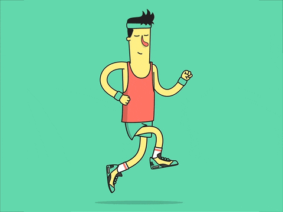

Place one hand on your chest and the other on your abdomen.
Breathe in slowly through your nose, focusing on expanding your abdomen rather than your chest.
Exhale slowly through your nose or mouth, allowing tension to release with each breath.
Continue for 10 to 20 minutes, enjoying the sensation of relaxation
4-7-8 Breathing Technique
Inhale quietly through your nose for a count of 4 seconds.
Hold your breath for 7 seconds.
Exhale slowly through your mouth for 8 seconds.
Repeat this cycle several times.
Tai Chi Breathing Techniques
Tai Chi, also known as Tai Chi Chuan, is an ancient Chinese martial art characterized by slow, flowing, and deliberate movements performed in a continuous sequence.
It is often described as "meditation in motion" and aims to harmonize the body's vital energy, called qi or chi, by balancing yin and yang principles.
Tai Chi improves strength, flexibility, balance, and mental focus, and is practiced worldwide both as a form of gentle exercise and self-defense.
Movements are typically performed standing and involve the whole body, promoting relaxation and mindfulness.
It integrates body, mind, and spirit through rhythmic breathing, imagery, and structural alignment.
Tai Chi forms vary widely, with sequences ranging from 24 to over 100 movements, often named after animal or natural imagery.
It is recognized for benefits such as fall prevention, improved brain function, reduced inflammation, and enhanced immune response
Walking or Jogging
Moderate-intensity aerobic exercises such as walking or jogging significantly reduce depressive symptoms. Even short sessions of 10-15 minutes can help, with 30 minutes on most days recommended for best results

Dancing and Aerobics
Activities like dancing, aerobics classes, swimming, hiking, or cross-country skiing raise heart rate and release endorphins, contributing to mood improvement